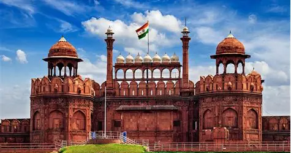
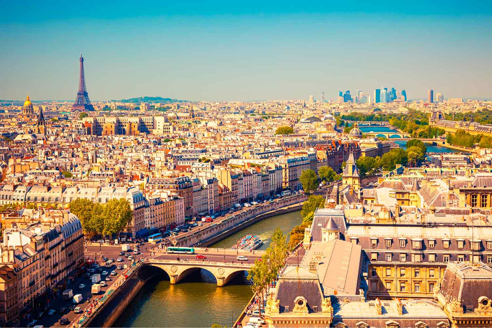
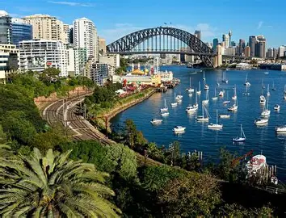
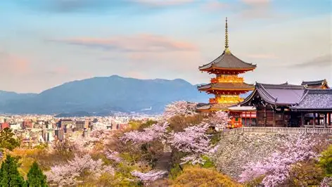

Travel Destination Guide
Travel Destination Guide
Explore of the worlds most iconic travel destination!
Explore of the worlds most iconic travel destination!
Delhi is one of the most popular tourist destinations in India, known for its rich history, culture, and modern lifestyle. The city is home to famous landmarks like the Red Fort, Qutub Minar, India Gate, and Lotus Temple, which attract visitors from all over the world. Delhi also offers vibrant markets, delicious street food, and beautiful gardens that make every trip enjoyable.
Paris is one of the most beautiful and famous tourist destinations in the world, known as the “City of Love.” It is home to iconic landmarks like the Eiffel Tower, Louvre Museum, Notre-Dame Cathedral, and Champs-Élysées, which attract millions of visitors every year. The city is also famous for its art, fashion, cafés, and delicious cuisine. With its romantic atmosphere, rich history, and stunning architecture, Paris offers tourists an unforgettable and magical experience.
New York is one of the most exciting tourist destinations in the world, known as “The City That Never Sleeps.” It is famous for its iconic landmarks such as the Statue of Liberty, Times Square, Central Park, and the Empire State Building. The city offers a vibrant mix of culture, entertainment, shopping, and world-class food from many different cultures. With its energetic atmosphere and endless attractions, New York gives tourists a truly unforgettable experience.

Sydney is one of the most popular tourist destinations in Australia, famous for its stunning harbor and beautiful beaches. The city is home to iconic attractions like the Sydney Opera House, Harbour Bridge, and Bondi Beach, which draw visitors from around the world. Sydney also offers a lively cultural scene, delicious food, and pleasant weather throughout the year. With its mix of natural beauty and modern city life, Sydney provides tourists with a memorable and relaxing travel experience.
Kyoto is one of Japan’s most beautiful tourist destinations, famous for its rich cultural heritage and traditional charm. The city is known for its stunning temples like Kinkaku-ji (Golden Pavilion), Fushimi Inari Shrine, and peaceful bamboo forests in Arashiyama. Kyoto also offers visitors a glimpse of old Japan through its tea houses, geisha culture, and historic streets. With its blend of history, nature, and tradition, Kyoto gives tourists a calm and unforgettable experience.
